2026-05-31T15:28:32+00:00
2510 Lodi St
Gemini vision request failed: HTTP Error 429: Too Many Requests
Rental registry: 1 matching record
Open entry
Syracuse Property Atlas
A slow, sourced field notebook for city properties: parcel data, Street View, AI image observations, city open-data matches, tract context, and OpenStreetMap features.
Atlas map
Orange points are published entries. Gray points are parcels still waiting in the queue. Select a point to open the property popup.
Published properties
Each entry is generated by the hourly pipeline. AI notes are treated as field observations, not official code findings.
2026-05-31T15:28:32+00:00
Gemini vision request failed: HTTP Error 429: Too Many Requests

2026-05-31T15:13:31+00:00
Gemini vision request failed: HTTP Error 429: Too Many Requests

2026-05-31T14:58:31+00:00
Gemini vision request failed: HTTP Error 429: Too Many Requests

2026-05-31T14:43:41+00:00
Gemini vision request failed: HTTP Error 429: Too Many Requests

2026-05-31T14:28:45+00:00
A street-level view showing a grassy lot and the side of a light-colored building, heavily obscured by a large central blur.

2026-05-31T14:13:32+00:00
Gemini vision request failed: HTTP Error 429: Too Many Requests

2026-05-31T13:58:32+00:00
Gemini vision request failed: HTTP Error 429: Too Many Requests
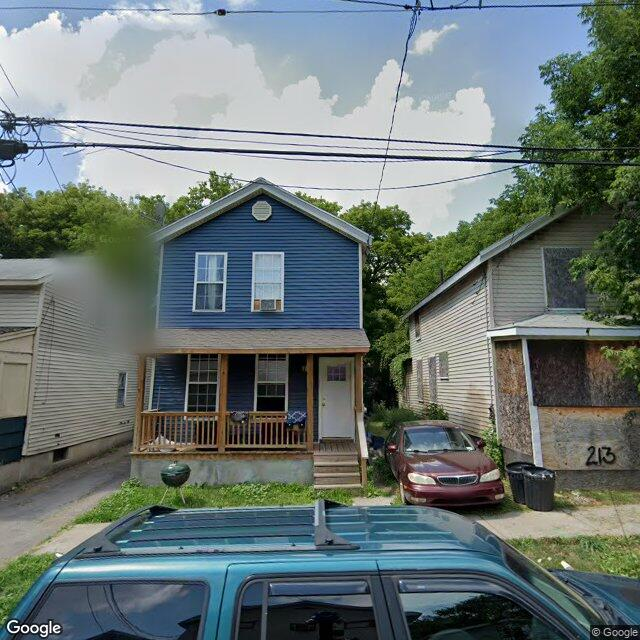
2026-05-31T13:43:50+00:00
A two-story residential building with blue siding and a front porch, appearing in generally good exterior condition.

2026-05-31T13:28:31+00:00
Gemini vision request failed: HTTP Error 429: Too Many Requests

2026-05-31T13:13:33+00:00
Gemini vision request failed: HTTP Error 429: Too Many Requests

2026-05-31T12:58:32+00:00
Gemini vision request failed: HTTP Error 429: Too Many Requests
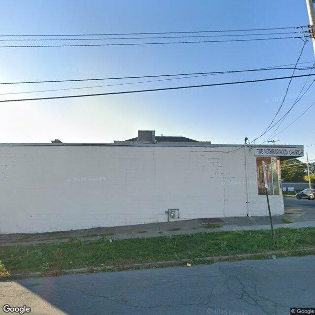
2026-05-31T12:43:47+00:00
A single-story commercial-style building with a painted masonry facade and corner storefront windows, displaying signage for 'The Neighborhood Church'.
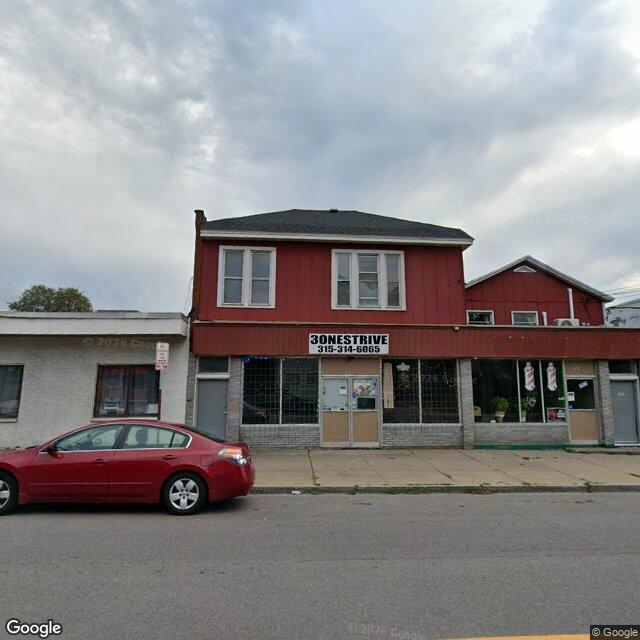
2026-05-31T12:28:47+00:00
A two-story mixed-use commercial and residential building with a red upper facade and storefronts on the ground level, appearing in stable condition.
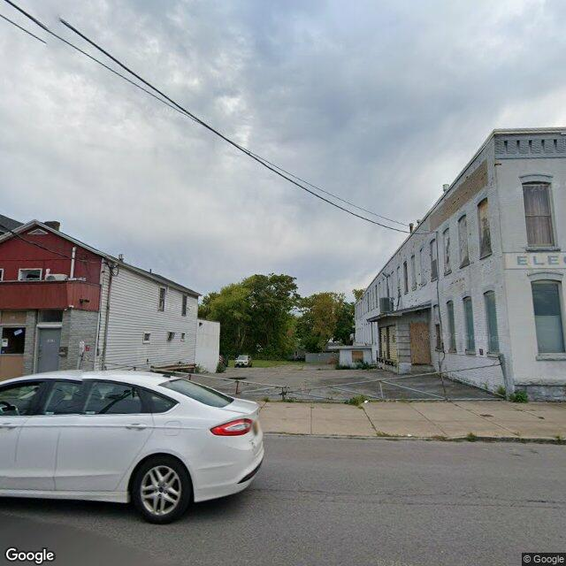
2026-05-31T12:13:53+00:00
A paved lot enclosed by a chain-link fence is positioned between a two-story mixed-use building on the left and a multi-story commercial building on the right with several boarded-up windows.
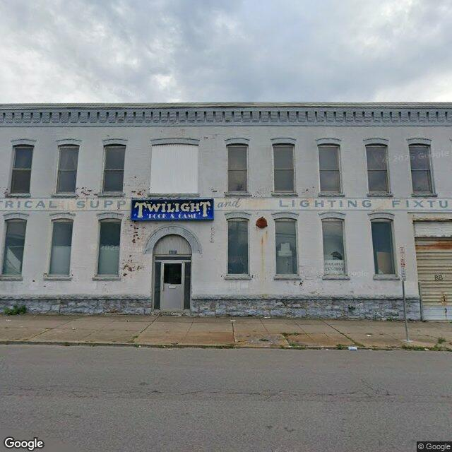
2026-05-31T11:58:52+00:00
A two-story painted brick commercial building showing some facade wear, a boarded upper window, and a vacancy sign.
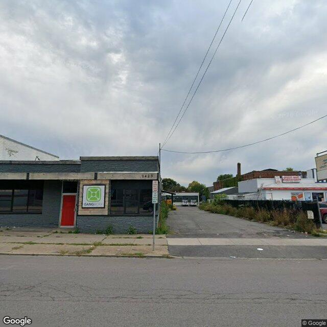
2026-05-31T11:44:07+00:00
A single-story commercial building with a painted brick facade, storefront windows, and a red entrance door, showing minor weed growth in the front sidewalk cracks.
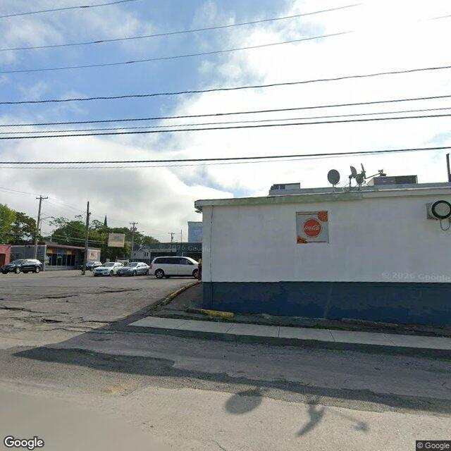
2026-05-31T11:28:56+00:00
A single-story commercial building with a painted exterior wall and an adjacent paved parking lot.
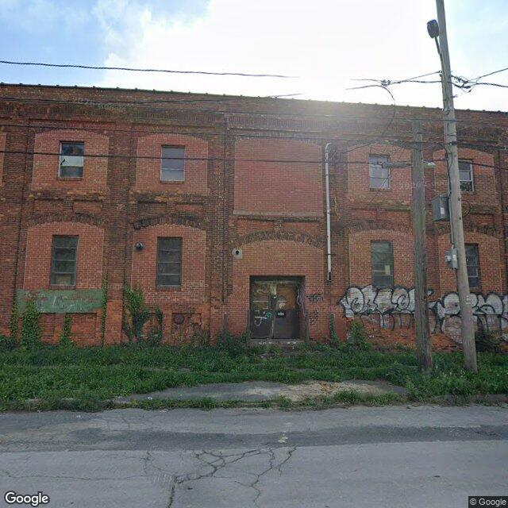
2026-05-31T11:13:56+00:00
A multi-story brick industrial or commercial building showing signs of graffiti, a boarded entryway, and overgrown vegetation along the foundation.
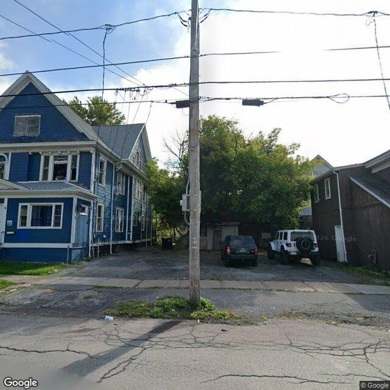
2026-05-31T10:58:52+00:00
The image shows a multi-story blue residential building with weathered siding and an adjacent paved parking area containing two vehicles, partially obscured by a central utility pole.
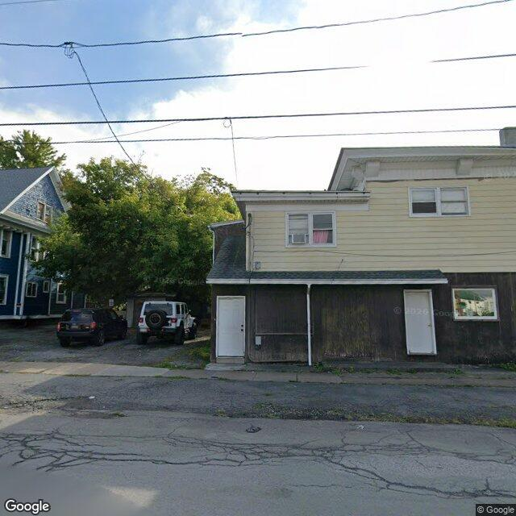
2026-05-31T10:43:41+00:00
A multi-story building featuring a light-colored sided upper level and a dark, weathered lower facade with multiple entry doors.
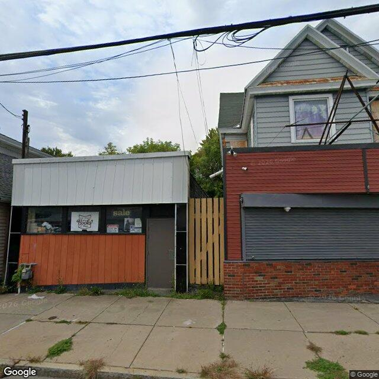
2026-05-31T10:28:38+00:00
The image shows a street-level view of a single-story commercial storefront on the left and a multi-story mixed-use building with a closed security shutter on the right, connected by a wooden fence.
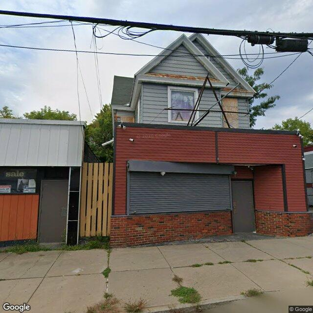
2026-05-31T10:13:38+00:00
A two-story mixed-use building featuring a closed commercial storefront on the ground level and a residential-style upper level with some boarded-up window openings.
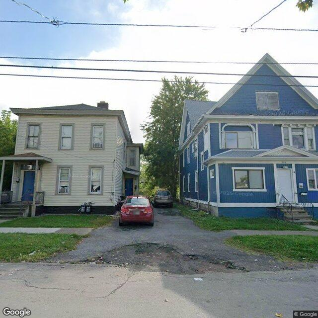
2026-05-31T09:58:41+00:00
The image shows two multi-story residential structures separated by a shared driveway, with the blue structure on the right displaying a boarded attic window.
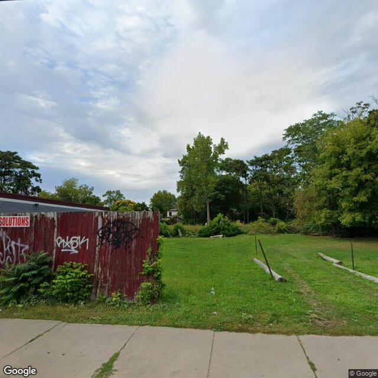
2026-05-31T09:43:38+00:00
The image shows a vacant grassy lot bordered on the left by a red wooden fence with visible graffiti.
Method
The database starts with Syracuse parcels and enriches each selected property with vacant, rental registry, code violation, and unfit-property feeds. Census geocoding adds tract-level ACS context, OpenStreetMap adds nearby mapped features, and optional image analysis adds a visible-condition read when a free or paid image source is configured.